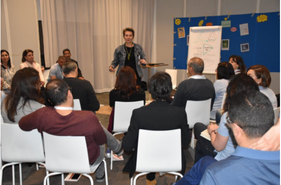
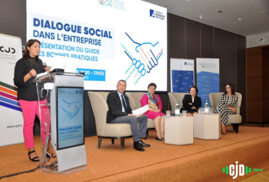
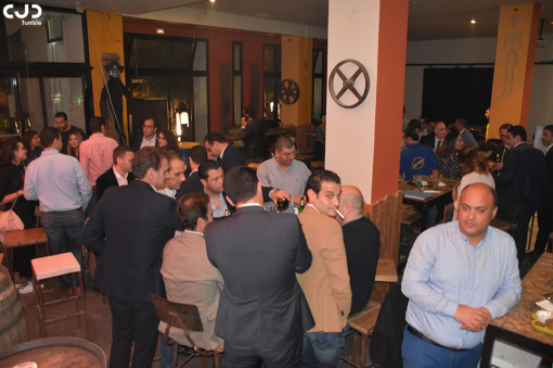

|
OSONS ÊTRE DIRIFIANT.E.S AUTREMENT
|
ACCUEIL
|
ACTION
|
EVENT
|
CONTACT
|
Formation
|

|
Ecole du JD
En lançant depuis sa création, plusieurs initiatives touchant à la formation et au
développement des compétences des jeunes dirigeants ou des porteurs de projets, La formation
a toujours été l’une des priorités du CJD
A cet effet, le Centre des Jeunes dirigeant d’Entreprise et la Konrad-Adenauer-Stiftung
ont lancé le 14 juin 2014 une nouvelle initiative : « L’école du JD »
Présentation :
• L’école du JD est une initiative dédiée aux chefs d’entreprises, jeunes dirigeants, en
particulier, ceux de formation non gestionnaire (ingénieurs, pharmaciens, médecins,
agronomes, informaticiens, architectes, etc..) en vue de les former sur l’amélioration
de la gestion de leur entreprise.
|
| 
|
Campus
Le Campus propose aux adhérents du CJD, une panoplie de formations aux outils CJD, c’est un
vrai passeport pour l’amélioration des performances et des capacités managériales du JD.
Le CJD Management Campus est aussi l’occasion pour acquérir la capacité à prendre la
responsabilité au sein du CJD National ou régional et d’en inscrire l’action et le
développement en cohérence avec les orientations de l’ensemble du réseau. Le campus est
aussi le lieu pour les futurs membres de bureau de se former (recrutement,
communication, trésorier, …) pour mieux remplir leurs missions.
|
Publication
|
Les jeunes dirigeants dans le tissu entrepreneurial tunisien
|
Etude sur les perceptions de la fiscalité et les besoins et attentes des jeunes dirigeants en termes
de réformes fiscales
|
Etude exploratoire des perceptions de la formation et l’employabilité
|
Etude exploratoire des perceptions de la formation professionnelle en alternance
|
Classement des Administrations Tunisiennes 2016 : Quelles perceptions des entrepreneurs
|
Etude sur la perception du climat des affaires et le moral des dirigeants des PME (décembre 2016)
|
Guide de financement de la PME
|
Réforme de l’administration, enquête auprès des PME Tunisiennes
|
Baromètre du climat des affaires pour les PME du secteur industriel
|
Conférence
|
|
|
Congrès National
Généralement organisé une fois par mois, ce format rassemble les JDs autour de l’actualité
économique du moment et d’un sujet particulier économique traité avec un expert et des représentants
du gouvernement, pour échanger, construire et faire des recommandations. Ces petits déjeuner débat
sont ouvertes à des invités non membres et bénéficie d’une forte médiatisation.
|
|
|
CJD Business Awards
Le CJD Business Awards est un concours organisé depuis 2008 par le Centre des Jeunes Dirigeants
d’Entreprises de Tunisie, il a pour objectif de récompenser des jeunes dirigeants tunisiens ayant
fait preuve de leadership dans le développement de leur entreprise, de valoriser dans les parcours
le sens de l’initiative et l’originalité des projets et de promouvoir l’innovation et
l’entrepreneuriat.
Les CJD Business Awards permettent aux jeunes lauréats de bénéficier d’une forte médiatisation
sur la scène économique, d’un accompagnement et de connexions aux réseaux du CJD et ceux de ses
partenaires.
|
| 
|
Petit déjeuner débat
Généralement organisé une fois par mois, ce format rassemble les JDs autour de l’actualité
économique du moment et d’un sujet particulier économique traité avec un expert et des représentants
du gouvernement, pour échanger, construire et faire des recommandations. Ces petits déjeuner débat
sont ouvertes à des invités non membres et bénéficie d’une forte médiatisation.
|
Networking
|
| 
|
Afterwork
After Work JD est une dynamique de le CJD visant à développer les relations d’affaires entre chefs
d’entreprise et décideurs. À ce but, des rencontres d’affaires sont organisées plusieurs fois par an
pour permettre aux participants de faire connaître leur activité et découvrir des entreprises,
d’échanger, de partager, de créer des liens, de nouer des partenariats…
|
Téléphone
+21671862355
+21671862172
|
Fax
21671862703
|
E-Mail
permanence@cjd.tn
|
Adresse
Immeuble Yassmine,Rue du Lac
Malaren 1053 Les Berges du Lac
|
Retrouver Nous Sur


 |
Copyright © 2021 CJD Tunisie
|
|